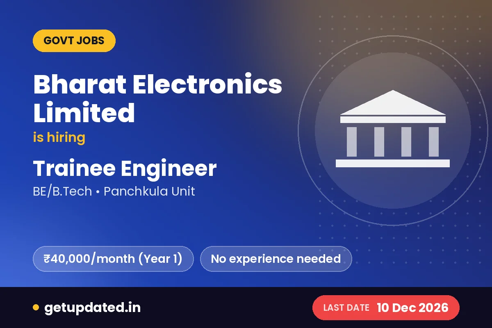

ICFRE-Institute of Wood Science and Technology (IWST), Bengaluru has put out a recruitment notification for Technical Assistant and Lower Division Clerk (LDC) posts. The notice appears on the official bulletin board dated 16 November 2026. If you hold a B.Sc with PCM or have passed 12th and can type, this is a central government opportunity in Bengaluru that does not ask for work experience.
The reported age range is 18 to 30 years, and listings give 21 December 2026 as the last date. That date was not yet visible on the official homepage when this article was prepared, so read the notification itself before you plan your submission.
This guide covers only Technical Assistant and LDC, the two posts a fresher can target. The notification also includes Multi-Tasking Staff posts, which are outside this article.
Table of Contents
- Quick Highlights
- About ICFRE-IWST Bengaluru
- Role Overview
- Eligibility Criteria
- Important Dates
- Salary and Pay Details
- Application Fee and Selection Process
- How to Apply
- Preparation Plan
- Common Mistakes to Avoid
- Official Links and Final Checklist
- Final Takeaway
- Also Read
- FAQs
Quick Highlights
| Particular | Details |
|---|---|
| Organisation | ICFRE-Institute of Wood Science and Technology (IWST), Bengaluru |
| Posts covered | Technical Assistant (Field/Lab), Lower Division Clerk |
| Qualification | B.Sc (PCM) for Technical Assistant; 12th pass plus typing for LDC |
| Experience | Not required |
| Age limit | 18-30 years (reported) |
| Location | Bengaluru, Karnataka |
| Notice date | 16 November 2026 |
| Last date | 21 December 2026 (reported, confirm in the notification) |
| Mode | As per the official notification |
Read the official notification fully before applying, because the last date, fee and form format are decided there and not in any summary.
About ICFRE-IWST Bengaluru
IWST is a research institute under the Indian Council of Forestry Research and Education (ICFRE). It is based in Bengaluru and works on wood science, panel products and forest-based technologies.
The institute runs a one-year Post Graduate Diploma in Wood and Panel Products Technology and an Advanced Woodworking Training Center. It also runs a Sandalwood Information System, an incubation centre and an NABL accredited laboratory for testing. Its research includes engineered timber such as cross laminated timber, fire-retardant door shutters and composites from waste materials.
For a fresher, joining such an institute means working in a technical, research-driven setting with the stability of a central government organisation. Laboratory and field work is part of daily life here, and the administrative side keeps the whole institute running.
Role Overview
Technical Assistant (Field/Lab)
A Technical Assistant supports scientists and research projects. Typical work in a science institute includes preparing samples, running routine tests, recording observations and maintaining equipment. Field duties may involve plantation or sample collection. The exact duties are given in the notification, so check them before you apply.
Lower Division Clerk (LDC)
An LDC handles the office side: typing letters and notes, maintaining files and registers, handling data entry and supporting senior staff in administration or accounts. Typing accuracy and basic computer skills matter the most in this role.

Eligibility Criteria
Check each point against the official notification before you apply.
- Technical Assistant: B.Sc with Physics, Chemistry and Mathematics (PCM).
- LDC: 12th pass plus typing skill. The required speed is in the notification.
- Experience: not required for either post.
- Age: 18 to 30 years as reported. Relaxation for SC/ST, OBC, PwBD, ex-servicemen and others, where it applies, is governed by the notification.
- Indian citizenship and other standard conditions apply as per the notice.
Check the cut-off date for age and qualification
Government notifications usually fix a date on which your age and qualification are counted. Confirm it in the notice, especially if you are close to the upper age limit or your result is still pending.
Important Dates
| Event | Date |
|---|---|
| Notification posted on IWST bulletin board | 16 November 2026 |
| Last date to apply | 21 December 2026 (reported, not yet confirmed on the official page) |
Apply early
Do not wait for the final days. Websites can slow down, and postal or document problems can cost you the application. Plan to submit at least a week before 21 December 2026, after confirming the date in the notification.
Salary and Pay Details
The official page excerpt available for this article does not state the pay level or salary for these posts, so it is not disclosed here. Central government posts of this kind normally fall under a pay level of the 7th Pay Commission matrix, with allowances on top. Look for the pay level in the notification before you take decisions based on salary.
Application Fee and Selection Process
The fee, any category-wise exemption and the selection stages are not available in the excerpt used for this article. Read the notification for these details.
For clerical posts, government recruiters often use a written test and a typing or skill test. Technical posts may add a practical or interview stage. These are general patterns only, so treat the notification as the final word on how IWST will select candidates.

How to Apply
- Open the official IWST website through the link in the Official Links section below.
- Find the recruitment notification dated 16 November 2026 in the Bulletin Board.
- Read the full notice: posts, qualification, age, pay, fee and instructions.
- Prepare your documents: certificates, marksheets, ID proof, category certificate if applicable, photograph and signature.
- Fill in the application as the notification instructs, whether online or by post.
- Pay the fee if applicable, and keep the receipt.
- Submit before the deadline and save a copy of the final application for later.
Preparation Plan
For Technical Assistant
Revise your B.Sc basics in Physics, Chemistry and Mathematics. Practise laboratory fundamentals such as units, measurement, safety and basic instruments. Because the institute works on wood and forest products, reading about wood science, plantations and testing methods on the IWST website will help in an interview or test.
For LDC
Typing is the main skill. Practise daily for 20 to 30 minutes on a free typing tool and work on accuracy first and speed second. Revise basic English grammar, simple arithmetic, general awareness and basic computer use such as MS Word and Excel.
For both posts
Follow current affairs, especially environment, forests and science news. Keep a short daily routine for the three weeks before the likely test.
Common Mistakes to Avoid
- Relying on job-site summaries instead of reading the official notification.
- Applying for the wrong post, or ignoring the qualification wording.
- Uploading unclear photos or signatures.
- Forgetting category or age-relaxation certificates.
- Submitting on the last day.
- Skipping typing practice for the LDC post.
Official Links and Final Checklist
Final checklist before you submit:
- Notification read in full and last date confirmed.
- Qualification and age verified against the notice.
- Documents scanned and ready.
- Fee paid if required, with receipt saved.
- Application copy saved.
Final Takeaway
This is a good chance for B.Sc (PCM) graduates and 12th pass candidates with typing skill to start a central government career in Bengaluru, with no experience required. Confirm the deadline in the official notice, prepare the documents now and apply early.
Also Read

Honeywell Technologies Hiring Software Engineering Interns in Bengaluru: Eligibility, Skills and How to Apply
Read now →
RRB Isolated Categories Recruitment 2026 (CEN 09/2026): Lab Assistant, Welfare Inspector & More for Freshers
Read now →
BEL Trainee Engineer Recruitment 2026: Apply Online for Panchkula Unit (Electronics, Mechanical, Electrical)
Read now →
Nubra DevOps Intern Hiring 2026: Bengaluru On-site Internship, Skills and How to Apply
Read now →Browse all latest jobs & updates →
FAQs
1. Who is recruiting in this notification?
ICFRE-Institute of Wood Science and Technology (IWST), Bengaluru, an institute of the Indian Council of Forestry Research and Education. The recruitment notification was posted on the official bulletin board on 16 November 2026.
2. Which posts are covered in this article?
Technical Assistant (Field/Lab) and Lower Division Clerk (LDC). The notification also lists Multi-Tasking Staff, which this article does not cover.
3. What is the educational qualification?
Technical Assistant needs a B.Sc with Physics, Chemistry and Mathematics (PCM). LDC needs 12th pass plus typing skill. Confirm the exact typing speed in the notification.
4. Is work experience required?
No. Freshers can apply for both posts.
5. What is the age limit?
The age limit reported is 18 to 30 years. Age relaxation for reserved categories should be checked in the official notification.
6. What is the last date to apply?
Listings report 21 December 2026, but this date was not yet confirmed on the official homepage. Check the notification and apply well before it.
7. Where is the job location?
The institute is in Bengaluru, Karnataka. Check the notification for any posting rules.
8. Where do I apply?
Use the notification and application details on the official IWST website, linked in the Official Links section of this article.